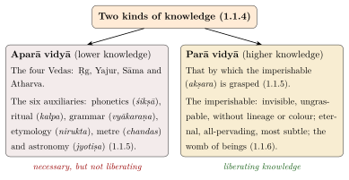
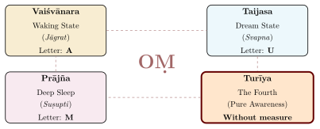
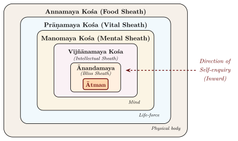
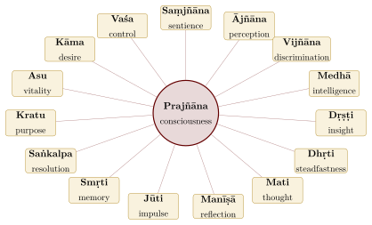

Chapter 3: The Mukhya Upaniṣads — Part II¶
This chapter reads four more of the principal Upaniṣads: the Muṇḍaka, Māṇḍūkya, Taittirīya, and Aitareya. Two are late texts of the Atharvaveda, one in verse and one in prose; the other two are prose sections of the Āraṇyakas of the Black Yajurveda and the Ṛgveda, and belong to the early prose layer. The Māṇḍūkya is read together with the verse commentary of Gauḍapāda, without which its later history cannot be understood.
3.1 The Muṇḍaka Upaniṣad¶
3.1.1 Overview and Vedic Affiliation¶
The Muṇḍaka Upaniṣad belongs to the Atharvaveda. Its name has been explained either from the root muṇḍ (to shave), as the text that “shaves away” ignorance, or from muṇḍaka (shaven-headed), referring to the renouncers for whom its teaching is said to be intended; at its close (3.2.10) it says that the teaching should be given only to those who have performed the “vow of the head” (śirovrata). It is known for its distinction between higher and lower knowledge and for its images of the relation between Brahman and the world.
Muṇḍaka Upaniṣad — Quick Reference
| Veda: | Atharvaveda (Śaunaka Śākhā) |
| Structure: | 3 muṇḍakas, 6 khaṇḍas, 64 mantras |
| Style: | Metrical (verse) |
| Central Theme: | Parā and Aparā Vidyā; Brahman as the target |
| Key Figures: | Śaunaka and Aṅgiras |
| Famous Imagery: | Two birds; spider’s web; sparks; bow-and-arrow |
3.1.2 Parā and Aparā Vidyā: Higher and Lower Knowledge¶
The Muṇḍaka divides all knowledge into two kinds:
dve vidye veditavye iti ha sma yad brahmavido vadanti, parā caivāparā ca
Translation: “Two kinds of knowledge are to be known — thus, indeed, the knowers of Brahman declare — the higher (parā) and the lower (aparā).”
— Muṇḍaka Upaniṣad 1.1.4

The Muṇḍaka (1.1.5) classifies the four Vedas themselves, together with the six auxiliary sciences (vedāṅgas), as aparā vidyā, lower knowledge. This does not make them worthless; it means that scriptural learning that does not lead to the knowledge of Brahman remains “lower”. Only the knowledge “by which the imperishable (akṣara) is grasped” is parā vidyā. The next verse (1.1.6) describes that imperishable: “that which is invisible, ungraspable, without lineage or colour, without eyes or ears, without hands or feet; eternal, all-pervading, omnipresent, most subtle; that undecaying one whom the wise perceive as the womb of beings” (yat tad adreśyam agrāhyam agotram avarṇam … yad bhūtayoniṃ paripaśyanti dhīrāḥ) (Figure 3.1). The same text calls the sacrifices “unsteady boats” (1.2.7) and sends the seeker who has seen the limits of ritual to a teacher, “fuel in hand” (1.2.12; Section 1.15).
3.1.3 Spider, Sparks and the Cause of the World¶
The Muṇḍaka explains the relation between Brahman and the world through a series of images:
yathorṇanābhiḥ sṛjate gṛhṇate ca
yathā pṛthivyām oṣadhayaḥ sambhavanti
yathā sataḥ puruṣāt keśalomāni
tathā’kṣarāt sambhavatīha viśvam
Translation: “As a spider sends forth and draws in its web; as herbs grow on the earth; as hair grows on the head and body of a living person — so from the Imperishable (Akṣara) arises this universe.”
— Muṇḍaka Upaniṣad 1.1.7
A later verse adds the image of sparks flying from a blazing fire (2.1.1). Each image brings out a different aspect of the relation (Table 3.1).
| Metaphor | Aspect Illustrated | Philosophical Implication |
|---|---|---|
| Spider and web | Creation from the creator’s own substance | The material cause (upādāna kāraṇa) and the efficient cause (nimitta kāraṇa) are one and the same |
| Herbs from earth | Spontaneous emergence from an underlying ground | The world arises naturally from Brahman without external agency |
| Hair from a person | Effortless, unconscious production | Creation does not diminish or alter the creator |
| Sparks from fire (2.1.1) | Multiplicity from unity | The many beings are like sparks from a single fire; they share the fire’s nature |
The spider image answered a question that later Vedānta made central: if the world needs both a material cause and an efficient cause, are they two different things? The spider is both the maker and the material of its web, and so, the Vedāntins concluded, Brahman is both the intelligent and the material cause of the world (abhinna-nimitta-upādāna-kāraṇa). Advaita and Viśiṣṭādvaita accept this doctrine; Madhva’s Dvaita, by contrast, treats God as the efficient cause only. The cosmogonies of the Upaniṣads as a whole are compared in Section 6.4.
3.1.4 The Two Birds¶
The Muṇḍaka’s best-known image is that of the two birds:
dvā suparṇā sayujā sakhāyā samānaṃ vṛkṣaṃ pariṣasvajāte
tayor anyaḥ pippalaṃ svādv atty anaśnann anyo abhicākaśīti
Translation: “Two birds, inseparable companions, perch upon the same tree. One of them eats the sweet fruit; the other looks on without eating.”
— Muṇḍaka Upaniṣad 3.1.1 (= Ṛgveda 1.164.20; also Śvetāśvatara 4.6)
The verse is borrowed from the Ṛgveda’s riddle hymn, where its meaning is obscure; in the Upaniṣad the two birds represent the jīvātman (the individual self, who “eats” the fruits of action, experiencing pleasure and pain) and the Lord or Supreme Self, the silent witness who merely observes. The tree is the body, or more broadly, the field of saṃsāra. The following verse (3.1.2) says that the bird sunk in grief on the same tree is freed from sorrow when it sees “the other, the Lord” and his greatness. Advaitins read this seeing as the recognition of identity; Viśiṣṭādvaitins and Dvaitins cite the same image as scriptural proof that the individual self and the Lord are distinct.
3.1.5 The Bow-and-Arrow Metaphor¶
The Muṇḍaka also gives an image of meditative practice:
praṇavo dhanuḥ śaro hy ātmā brahma tal lakṣyam ucyate
apramattena veddhavyaṃ śaravat tanmayo bhavet
Translation: “Oṃ is the bow; the self (ātman) is the arrow; Brahman is said to be the target. It is to be hit by one who is undistracted. One should become one with It, as the arrow becomes one with the target.”
— Muṇḍaka Upaniṣad 2.2.4
3.2 The Māṇḍūkya Upaniṣad¶
3.2.1 Overview and Significance¶
The Māṇḍūkya Upaniṣad is the shortest of the principal Upaniṣads, consisting of twelve prose mantras. Its later importance is out of proportion to its length, because Gauḍapāda composed a verse treatise (Kārikā) upon it, and Śaṅkarācārya (or a commentator of his school) commented on both the Upaniṣad and the Kārikā.
The late Muktikā Upaniṣad (1.26) claims that māṇḍūkyam ekam evālaṃ mumukṣūṇāṃ vimuktaye — “The Māṇḍūkya alone is sufficient for the liberation of seekers.” Its date is debated: Olivelle places it around the turn of the Common Era, while some scholars have argued that it is later than, or contemporary with, Gauḍapāda’s Kārikā (c. 6th century CE).
Māṇḍūkya Upaniṣad — Quick Reference
| Veda: | Atharvaveda |
| Mantras: | 12 (the shortest principal Upaniṣad) |
| Style: | Prose |
| Central Theme: | Oṃ and the four states of consciousness |
| Key Teaching: | Ātman = Brahman = Oṃ; the fourth state (Turīya) |
| Associated Text: | Gauḍapāda’s Māṇḍūkya Kārikā |
3.2.2 The Opening Declaration¶
The Māṇḍūkya begins by identifying the syllable Oṃ with all that exists:
om ity etad akṣaram idaṃ sarvaṃ / tasyopavyākhyānam / bhūtaṃ bhavad bhaviṣyad iti sarvam oṅkāra eva / yac cānyat trikālātītaṃ tad apy oṅkāra eva
Translation: “Oṃ — this syllable is all this. Its explanation is: all that is past, present, and future is verily Oṃ. And whatever transcends the three divisions of time — that too is Oṃ.”
— Māṇḍūkya Upaniṣad, Mantra 1
3.2.3 The Four Pādas (Quarters) of the Ātman¶
The Māṇḍūkya’s central teaching is the analysis of the Ātman into four pādas (quarters), corresponding to the three states of consciousness plus the transcendent fourth (Figure 3.2 and Table 3.2). Mantras 8–12 then match the quarters to the parts of the syllable Oṃ, justifying each correspondence by word-play: A from “obtaining” and “being first”, U from “exaltation” and “being in between”, M from “measuring” and “merging”. The fourth is “without measure” (amātra, mantra 12), which the commentators explain as the silence in which the syllable ends. The states themselves are examined in Chapter 10.

| Letter | State | Name | Realm | Characteristics |
|---|---|---|---|---|
| A | Waking (jāgrat) | Vaiśvānara | Gross | Outward-facing; experiences external objects; 7 limbs, 19 mouths |
| U | Dream (svapna) | Taijasa | Subtle | Inward-facing; experiences internal impressions; luminous |
| M | Deep Sleep (suṣupti) | Prājña | Causal | Unified mass of consciousness; seed state; blissful |
| — | Turīya | Ātman | Beyond | Neither inward nor outward; beyond duality; pure awareness |
3.2.4 The Description of Turīya¶
The Māṇḍūkya describes the fourth quarter (mantra 7) entirely by negation:
nāntaḥprajñaṃ na bahiṣprajñaṃ nobhayataḥprajñaṃ
na prajñānaghanaṃ na prajñaṃ nāprajñam
adṛṣṭam avyavahāryam agrāhyam alakṣaṇam
acintyam avyapadeśyam ekātmapratyayasāraṃ
prapañcopaśamaṃ śāntaṃ śivam advaitam
caturthaṃ manyante sa ātmā sa vijñeyaḥ
Translation: “Not inwardly conscious, not outwardly conscious, not conscious both ways, not a mass of consciousness, not conscious, not unconscious — unseen, beyond transaction, ungraspable, without characteristics, unthinkable, unnameable, the essence of the awareness of the one Self, the cessation of the phenomenal world, tranquil, auspicious, non-dual — that is the Fourth. That is the Ātman. That is to be known.”
— Māṇḍūkya Upaniṣad, Mantra 7
The passage is a classic via negativa: the Fourth is described by negation because, in the text’s view, it lies beyond all categories of discursive thought. Advaita reads it as the non-dual self that underlies the three states. Madhva, who treated the verses of Gauḍapāda’s first chapter as part of the Upaniṣad itself, read the four quarters instead as four forms of Viṣṇu presiding over the states of the soul.
3.2.5 Gauḍapāda’s Kārikā¶
Gauḍapāda (c. 6th century CE), regarded by tradition as the paramaguru (teacher’s teacher) of Śaṅkara, composed 215 verses (kārikās), also called the Āgamaśāstra, in four chapters (prakaraṇas). They develop the Māṇḍūkya’s twelve mantras into the earliest surviving systematic statement of non-dualist Vedānta (Mahadevan 1952; Bhattacharya 1943).
-
Āgama Prakaraṇa (29 verses): an exegesis of the Upaniṣad, setting out the correspondence between A-U-M and the three states and pointing to the measureless fourth as Turīya.
-
Vaitathya Prakaraṇa (38 verses): the chapter on “unreality”. Gauḍapāda argues that the waking state is, in its essential structure, no different from dream. Dream objects are real within the dream but dissolve upon waking; so the objects of waking experience are real within the waking state but dissolve upon the “awakening” to Turīya.
-
Advaita Prakaraṇa (48 verses): the chapter on non-duality. Its central teaching is ajāti-vāda, the doctrine that nothing has ever been born, because birth would imply a change in a reality that is unchanging.
-
Alātaśānti Prakaraṇa (100 verses): “The Quenching of the Firebrand”, the longest and most technical chapter. A firebrand (alāta) whirled in a circle produces the appearance of a ring of fire; so the phenomenal world is the appearance produced by the “movement” of consciousness, which is itself unborn and unmoving.
na nirodho na cotpattir na baddho na ca sādhakaḥ
na mumukṣur na vai mukta ity eṣā paramārthatā
Translation: “There is no dissolution, no origination; no one in bondage, no one practising spiritual discipline; no one seeking liberation, no one liberated. This is the ultimate truth.”
— Māṇḍūkya Kārikā 2.32
The argument from dream¶
Gauḍapāda’s best-known argument, in the second chapter, is the analogy between dream and waking. Both present objects that appear external and real; both involve a perceiving subject and perceived objects; and both are contradicted by a subsequent state (dream by waking, waking by the higher awareness of Turīya). If dream objects are admitted to be unreal, then, by parity of reasoning, so are waking objects.
ādāv ante ca yan nāsti vartamāne ’pi tat tathā | vitathaiḥ sadṛśāḥ santo ’vitathā iva lakṣitāḥ
Translation: “What does not exist at the beginning and at the end is equally non-existent in the middle. Though resembling the unreal, they appear as if real.”
— Gauḍapāda Kārikā 2.6
The argument is often compared with Descartes’ method of doubt, but the comparison is instructive in its limits: Descartes uses the dream argument to reach a secure foundation in the cogito; Gauḍapāda uses it to dissolve objectivity altogether, leaving only the non-dual awareness (Turīya) beyond the duality of subject and object.
Scholarly Note: Gauḍapāda and Buddhist thought
The relationship of Gauḍapāda’s Kārikā to Buddhist philosophy, particularly Mādhyamaka and Yogācāra, has been much debated. Vidhushekhara Bhattacharya argued for direct Buddhist influence (Bhattacharya 1943); T.M.P. Mahadevan maintained that while Gauḍapāda engages with Buddhist arguments, his conclusions are grounded in the Upaniṣadic tradition (Mahadevan 1952). The fourth chapter shares vocabulary and images with Buddhist texts (the firebrand-circle, the language of “non-origination”). It opens (4.1) with homage to the “best of bipeds” (dvipadāṃ vara), whom many readers take to be the Buddha, and near its end (4.99) declares that this teaching “was not spoken by the Buddha” (naitad buddhena bhāṣitam) — at minimum, evidence of close and deliberate engagement with Buddhist thought.
3.3 The Taittirīya Upaniṣad¶
3.3.1 Overview and Vedic Affiliation¶
The Taittirīya Upaniṣad belongs to the early prose layer of the principal Upaniṣads and to the Kṛṣṇa Yajurveda (Taittirīya Śākhā), forming books 7–9 of the Taittirīya Āraṇyaka. It is divided into three sections called vallīs (literally, “creepers”):
Taittirīya Upaniṣad — Quick Reference
| Veda: | Kṛṣṇa Yajurveda (Taittirīya Śākhā) |
| Structure: | 3 vallīs: Śikṣā, Ānanda, and Bhṛgu |
| Style: | Prose |
| Central Theme: | The five sheaths; Brahman as bliss |
| Key Teaching: | Pañca-kośa (five sheaths) doctrine |
| Famous Declaration: | satyaṃ jñānam anantaṃ brahma |
3.3.2 The Śikṣā Vallī: Phonetics, Correspondences and Ethics¶
The first section, the Śikṣā Vallī, begins with phonetics (śikṣā), the science of correct recitation, and with meditations that show the logic of correspondence on which the oldest Upaniṣads rest. In the meditation on the “great combinations” (mahāsaṃhitā, 1.3), the phonetic junction of two sounds becomes a model for five domains: of the worlds, earth is the first form, heaven the last, space their junction and wind their link; of the lights, fire and sun are joined by water and lightning; and so on through knowledge, offspring and the self. The ritual and the cosmos are bound by such equivalences (bandhu, Section 1.1). The section also teaches meditation on the sacred utterances bhūr, bhuvaḥ, suvaḥ and a fourth, mahaḥ, identified with Brahman (1.5).
The section ends with the instruction the teacher gives the pupil at the close of his study (1.11), often called the “convocation address”:
satyaṃ vada / dharmaṃ cara / svādhyāyān mā pramadaḥ
mātṛdevo bhava / pitṛdevo bhava / ācāryadevo bhava / atithidevo bhava
Translation: “Speak the truth. Follow dharma. Do not neglect self-study. Let your mother be a god to you. Let your father be a god to you. Let your teacher be a god to you. Let your guest be a god to you.”
— Taittirīya Upaniṣad, Śikṣā Vallī 11
3.3.3 The Ānanda Vallī: The Five Sheaths (Pañca-Kośa)¶
The second section, the Ānanda Vallī, opens with the definition of Brahman that the Vedāntins quoted more than any other, and goes on to describe the five “selves” that later Vedānta called sheaths (pañca-kośa).
satyaṃ jñānam anantaṃ brahma / yo veda nihitaṃ guhāyāṃ parame vyoman / so’śnute sarvān kāmān saha / brahmaṇā vipaścitā
Translation: “Brahman is Truth, Knowledge, and Infinity. He who knows It as existing in the cave (of the heart), in the highest space — he enjoys all desires together with the omniscient Brahman.”
— Taittirīya Upaniṣad 2.1.1
Śaṅkara’s analysis of the three terms — that they define Brahman’s own nature by excluding their opposites rather than attributing properties to it — is discussed in Section 6.2. The text then describes a cosmogony in which space, wind, fire, water and earth emerge in turn from the self (2.1), and a series of five selves, each within the last (Figure 3.3).

| Kośa (Sheath) | Nature | Body | Description |
|---|---|---|---|
| Annamaya | Food/Physical | Gross (Sthūla) | The physical body, made of and sustained by food |
| Prāṇamaya | Vital/Energy | Subtle (Sūkṣma) | The life-force; the five prāṇas |
| Manomaya | Mental | Subtle | The mind and its operations; thinking, doubting, etc. |
| Vijñānamaya | Intellectual | Subtle | The discriminating intellect (buddhi); the sense of “I” |
| Ānandamaya | Blissful | Causal (Kāraṇa) | The sheath of bliss experienced in deep sleep |
The Taittirīya itself describes each “self” (ātman) as filling the previous one and having the same human shape; it does not use the word kośa (“sheath”), which comes from later Vedānta. The correlation of the sheaths with the gross, subtle and causal bodies shown in Table 3.3, and the practice of “discriminating the five sheaths” (pañca-kośa-viveka), are likewise later Advaita developments, found for example in Vidyāraṇya’s Pañcadaśī. In Advaita the Ātman is none of these five sheaths: one recognises in turn “I am not the body”, “I am not the vital breath” and so on, arriving at the witness of all five. Śaṅkara’s commentary on Brahmasūtra 1.1.12–19 accordingly argues that even the “self made of bliss” (ānandamaya) is not Brahman itself. Other Vedāntins read the same sūtras the other way: Rāmānuja, and the earlier commentators whose view Śaṅkara reports, take the self made of bliss to be Brahman. Contemporary yoga therapy has adopted the five-sheath model as a framework for organising interventions at the level of body, breath, mind, understanding and meditative absorption; this is a modern adaptation, distinct from the Upaniṣad’s own purpose of leading the student to Brahman, and not evidence of therapeutic efficacy.
3.3.4 The Scale of Bliss (Ānanda-Mīmāṃsā)¶
The Ānanda Vallī (2.8) also contains an ascending scale of bliss (ānanda-mīmāṃsā), a “calculus” of the grades of happiness (Table 3.4).
| Level | Being | Measure of Bliss |
|---|---|---|
| 1 | A blessed human youth, learned, healthy, strong, possessing the whole earth | 1 unit of human bliss |
| 2 | Human Gandharvas | 100 \(\times\) human bliss |
| 3 | Divine Gandharvas | 100 \(\times\) level 2 |
| 4 | Pitṛs (Ancestors in their eternal world) | 100 \(\times\) level 3 |
| 5 | Devas born in the Ājāna heaven | 100 \(\times\) level 4 |
| 6 | Karma Devas (gods by merit) | 100 \(\times\) level 5 |
| 7 | Devas (the gods proper) | 100 \(\times\) level 6 |
| 8 | Indra (king of gods) | 100 \(\times\) level 7 |
| 9 | Bṛhaspati (preceptor of gods) | 100 \(\times\) level 8 |
| 10 | Prajāpati (the Creator) | 100 \(\times\) level 9 |
| 11 | Brahman | 100 \(\times\) level 10; and, in the next section (2.9), the bliss of Brahman “from which words turn back, together with the mind” |
By making each level a hundredfold greater than the previous one, the Upaniṣad builds a scale that rises through astronomical magnitudes: ten hundredfold steps make the bliss at the top \(100^{10}\) (\(10^{20}\)) times the bliss of the ideal human. A refrain adds that each grade of bliss is also enjoyed by “a man learned in the Veda who is free from desire” (śrotriyasya cākāmahatasya): the point is that freedom from desire gives access to what no worldly achievement can. The Bṛhadāraṇyaka (4.3.32–33) states a similar idea and a similar scale: “on a mere fraction of this very bliss other creatures live.” Advaita commentators explain all pleasure as Brahman’s bliss filtered through the limiting adjuncts (upādhis) of body, mind and senses.
3.3.5 The Bhṛgu Vallī: The Seeker’s Journey¶
The third section, the Bhṛgu Vallī, narrates the story of Bhṛgu, son of Varuṇa, who is instructed by his father to discover Brahman through tapas (austerity, contemplation). Bhṛgu meditates and successively identifies Brahman with food, then with prāṇa, then with mind, then with vijñāna, and finally with ānanda (bliss). Each identification is deeper than the previous one, and the narrative mirrors the five selves of the Ānanda Vallī. It culminates in the sentence:
ānando brahmeti vyajānāt
Translation: “He understood: Bliss (ānanda) is Brahman!”
— Taittirīya Upaniṣad, Bhṛgu Vallī 6
3.4 The Aitareya Upaniṣad¶
3.4.1 Overview and Vedic Affiliation¶
The Aitareya Upaniṣad belongs to the Ṛgveda (Aitareya Āraṇyaka) and is the only mukhya Upaniṣad from the Ṛgveda upon which Śaṅkara wrote a commentary. It comprises three chapters dealing with creation, the nature of the Self, and the identity of the Self with Brahman.
Aitareya Upaniṣad — Quick Reference
| Veda: | Ṛgveda (Śākala Śākhā, Aitareya Āraṇyaka 2.4–6) |
| Chapters: | 3 (dealing with creation, birth, and the Self) |
| Style: | Prose |
| Central Theme: | Creation; the Self as pure consciousness |
| Key Teaching: | Prajñānaṃ Brahma (Consciousness is Brahman) |
3.4.2 The Creation Narrative¶
The Aitareya opens with a creation narrative:
ātmā vā idam eka evāgra āsīt / nānyat kiñcana miṣat / sa īkṣata lokān nu sṛjā iti
Translation: “In the beginning, the Ātman alone existed. Nothing else was there. He thought: ‘Let me create the worlds.’ ”
— Aitareya Upaniṣad 1.1.1
He created the worlds of the celestial waters (ambhas), the light-particles (marīci), the mortal world (mara) and the waters below (āpaḥ). Then the cosmic Person (Puruṣa) was fashioned, and from this Person the organs of perception and action and their deities emerged. Finally the self, asking how this body could exist without it, split open the suture of the skull (sīman) and entered through that door, called vidṛti (1.3.12). Creation thus follows an act of reflection (īkṣaṇa, “he thought”), and Vedāntins later cited the passage as evidence that the first cause is conscious.
3.4.3 The Threefold Birth¶
The Aitareya’s second chapter presents a teaching on the threefold birth of a man (2.1.1–4):
The first birth is when the man deposits his semen, his own “essence”, in the woman.
The second birth is the delivery of the child, who then takes the father’s place in performing meritorious works.
The third birth is the father’s rebirth after death, when he departs from this world and is born again.
The chapter closes by citing the Ṛg-Vedic seer Vāmadeva, who, already knowing this while still in the womb, broke free of his “hundred iron fortresses” and became immortal (2.1.5–6).
3.4.4 Prajñānaṃ Brahma¶
The third chapter asks “Who is this self?” and answers with one of the sentences later counted among the four Mahāvākyas (Great Sayings):
prajñānaṃ brahma
Translation: “Consciousness is Brahman.” (or “Intelligence is Brahman.”)
— Aitareya Upaniṣad 3.1.3
Before this declaration, the text lists the forms of knowing and willing — sensation, perception, discrimination, intelligence, insight, resolution, thought, understanding, impulse, memory, purpose, life, desire and control — and calls them all “names of prajñāna” (3.1.2). Gods, elements and every kind of creature are then said to be “guided by prajñāna” and “established in prajñāna” (Figure 3.4).

The Vedāntic commentators reconstruct the Aitareya as an argument in three stages. In the cosmological stage, the self creates the world by an act of seeing (īkṣaṇa), so that consciousness comes before the material world. In the anthropological stage, the same self that creates the cosmos enters each body and animates it. In the epistemological stage, every cognitive function is a name of one prajñāna, the single thread running through cognitive diversity. On this reading the Aitareya treats consciousness as prior to and more basic than matter, and Advaita reads it as a statement that consciousness is the only reality (Chapter 5). The text itself is a creation story followed by an identification; it does not argue against any rival view of the world, and the theistic schools read its prajñāna as the knowing Lord rather than as attributeless consciousness.
Modern Relevance: The Aitareya and Contemporary Philosophy of Mind
Modern readers often compare the Vedāntic reading of the Aitareya with positions in contemporary philosophy of mind. The “hard problem of consciousness” formulated by David Chalmers (why is there subjective experience at all?) is most pressing for a framework that takes matter as fundamental and consciousness as something to be explained; the Vedāntic reading reverses that order of explanation. The “panpsychist” views of philosophers such as Galen Strawson and Philip Goff, which hold that consciousness is a fundamental feature of reality, are a closer parallel, though Advaita goes further in making consciousness the only fundamental reality. Such comparisons are analogies between frameworks, not claims about what the text’s authors intended.
3.5 Reading the Upaniṣads Together: Apparent Contradictions¶
The texts read in this chapter and the last do not say the same thing. Some passages seem to support monism, others a distinction between God and the soul; some describe creation, others (in Gauḍapāda’s reading) deny it; some describe a personal Lord, others an impersonal Absolute. Modern scholars generally take these differences as evidence of several strands of speculation composed over several centuries. The traditional response is the principle of samanvaya (harmonisation) on which the Brahmasūtra of Bādarāyaṇa is built (Section 11.2): the Upaniṣads are taken to teach one coherent doctrine, and apparent conflicts are resolved by rules of interpretation. Each school harmonises the texts differently. Table 3.5 gives the Advaita solution; Viśiṣṭādvaita and Dvaita resolve the same tensions in favour of real difference, taking the texts of identity to express the soul’s dependence on or inseparability from God (Chapter 11).
| Apparent Position A | Apparent Position B | Harmonisation (Samanvaya) |
|---|---|---|
| Brahman creates the world (Taittirīya) | Nothing is ever created (Māṇḍūkya Kārikā) | Creation is provisionally described for pedagogical purposes; ultimately, Brahman alone exists |
| Ātman is described with attributes (Chāndogya) | Ātman is beyond all description (Bṛhadāraṇyaka) | Attributes describe the conditioned Brahman (saguṇa); the unconditioned Brahman (nirguṇa) is beyond predication |
| Individual soul is distinct from Brahman (Muṇḍaka 3.1.1–2) | Individual soul is identical with Brahman (Chāndogya 6.8.7) | The distinction is apparent, caused by ignorance; the identity is the ultimate truth |
Oṃ Śāntiḥ Śāntiḥ Śāntiḥ